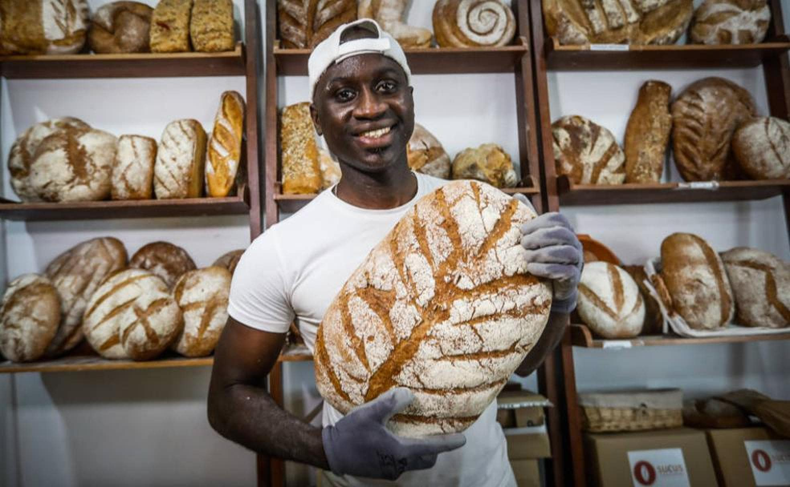
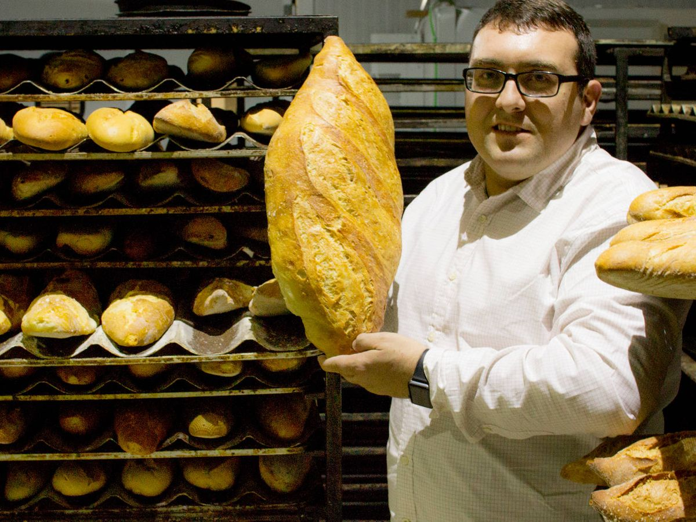

Fundador

Carlos Martínez es el apasionado fundador de "Delicias de la Abuela", una panadería que se ha convertido en un referente de calidad y tradición en su comunidad. Con una formación en gastronomía y más de 15 años de experiencia en el arte de la panadería, Carlos decidió abrir su propio negocio para compartir las recetas heredadas de su abuela, combinando métodos tradicionales con innovaciones modernas. Su dedicación al uso de ingredientes frescos y locales, junto con su compromiso con la excelencia, ha ganado el reconocimiento y la lealtad de sus clientes. Además de dirigir la panadería, Carlos también se involucra en actividades comunitarias y talleres de cocina para transmitir su amor por el pan y la repostería.
Co-fundador

Javier López es el cofundador de "Delicias de la Abuela" y el colaborador clave de Carlos Martínez en esta floreciente panadería. Con una formación en administración de empresas y una habilidad innata para el marketing, Javier aporta una perspectiva estratégica que complementa a la perfección la pasión culinaria de Carlos. Su destreza en la gestión de operaciones, finanzas y relaciones con los clientes ha sido fundamental para el crecimiento y la estabilidad del negocio.
Javier también se encarga de las redes sociales y las campañas publicitarias, asegurándose de que la panadería mantenga una presencia atractiva y dinámica tanto en la comunidad local como en línea.
Cocinera

Clara Martínez, la entrañable abuela y fuente de inspiración detrás de "Delicias de la Abuela", es la cocinera principal y el corazón de la panadería. Con más de cinco décadas de experiencia en la cocina, Clara ha perfeccionado recetas tradicionales que han sido transmitidas de generación en generación. Su pasión por la repostería y el pan artesanal se refleja en cada producto que sale del horno, siempre elaborado con amor y atención al detalle.